Forts
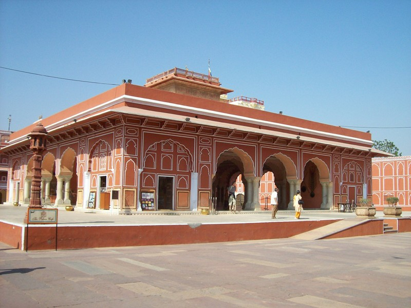
The Land of Kings has numerous forts and palaces. The City Palace actually has a resident king and queen. Their Majesties don't make public appearances, but do collect the entrance fees. Above: courtyard
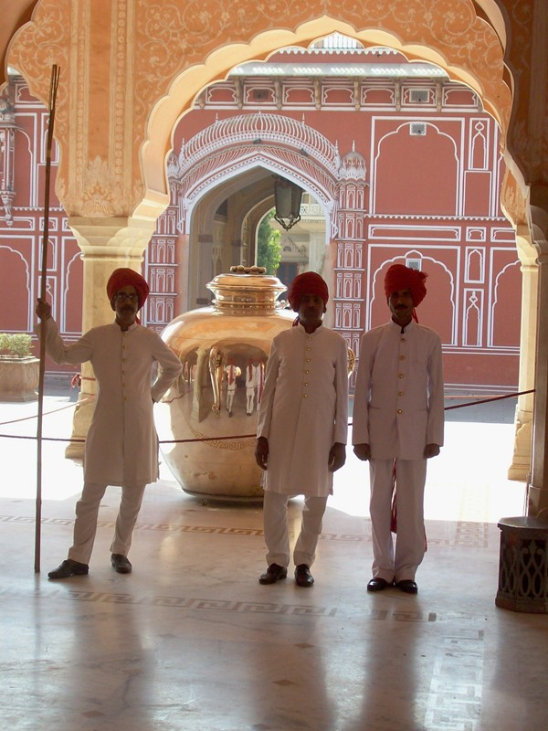
One of two brass urns. One of the King's ancestors drank only Ganges water. When visiting Queen Victoria, he brought his own supply aboard the ship. As soon as I took the picture, these guys swarmed up making the international "baksheesh mudra".
There's also a textile museum (Rajasthan is famous for textiles) where men fall asleep, and an armory where women fall asleep. These are no-picture zones, and they're pretty serious about it. Some took a pic and was immediately grabbed and hustled out by these guys. I asked Ram what then. "They'll keep the camera, that's for sure. Then they'll probably spend a couple of days driving him around places." Bribes all around, I'm sure.
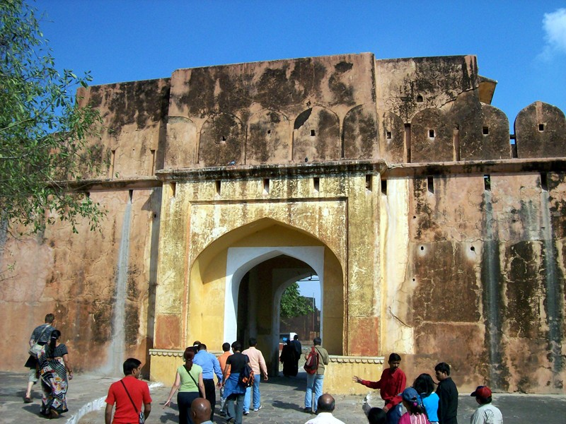
Amer Fort (I thought they were saying "Amber Fort" for the color until I got home and saw it in print.)
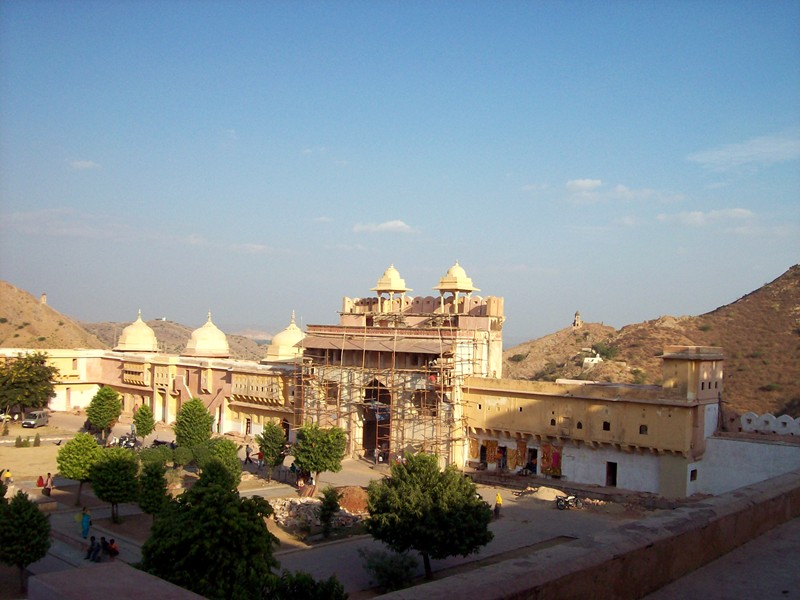
Extensive rennovations are underway.
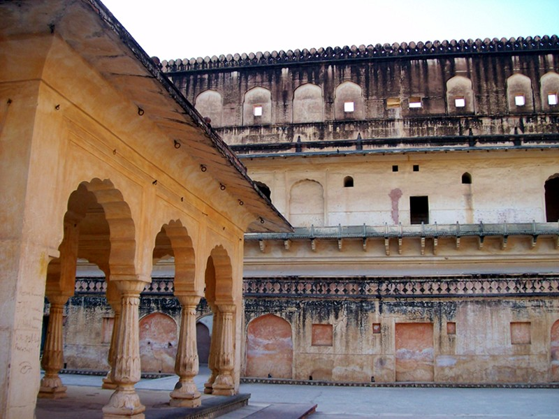
The mistrustful Prince would park emissaries in the central plaza and shout down at them from the balcony. Relative most especially.
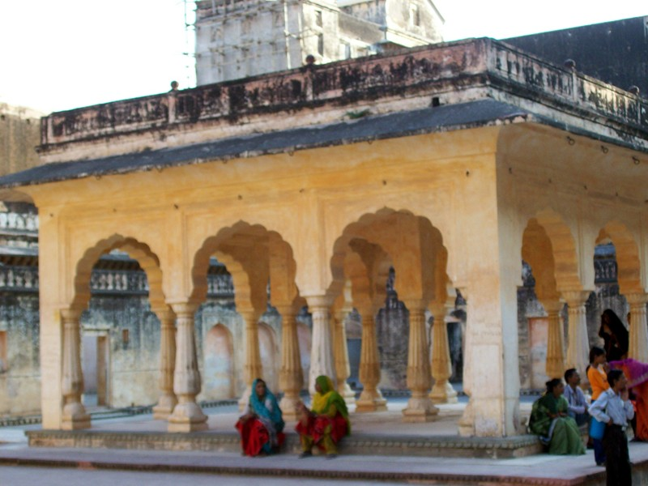
"Parrot women" in traditional dress.
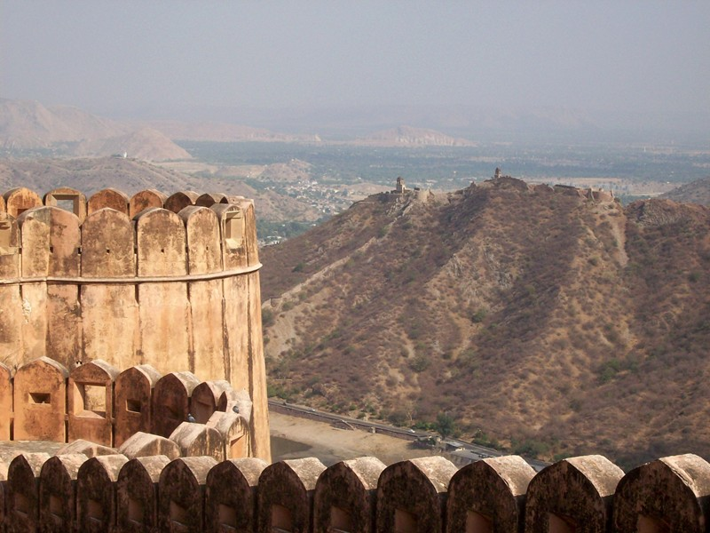
View from Amer Fort. The hills look a lot like SoCal. If you weren't in Rajasthan, you'd be in San Bernardino.
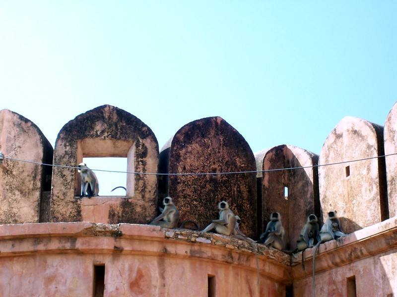
Jaigarh Fort
There are two main kinds of monkeys in Central India--brown and friendly, and large, silver and standoffish. These are the latter. Ram told me the names, but I forgot them.
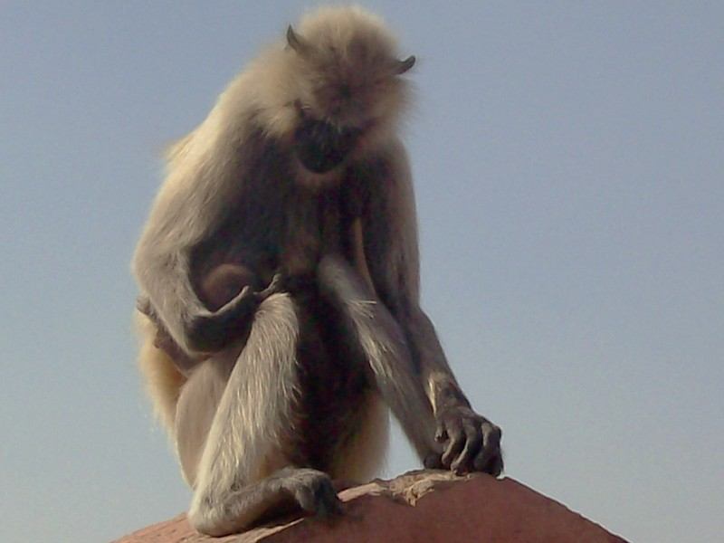
Motherhood
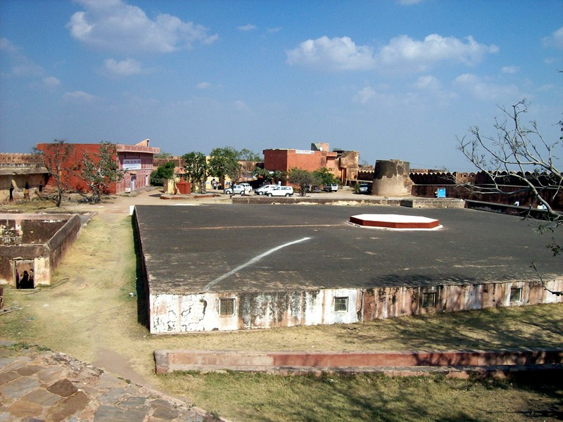
Cistern for siege-proofing the fort.
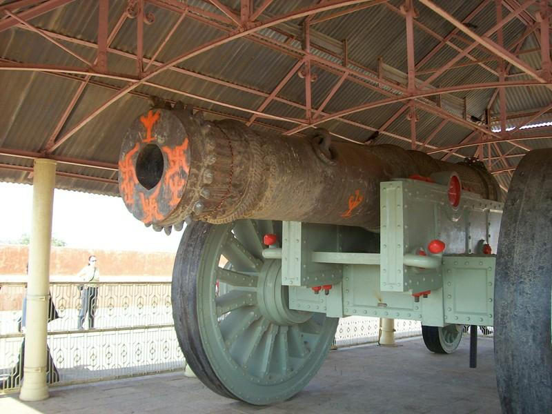
Jaivana, superweapon of the 1700s. It has a 22 mile range, loads with 100kg of gunpowder, and requires seven elephants to reposition. It's test firing was so convincing that it was never subequently used. It was commissioned by the same king that built the observatory.
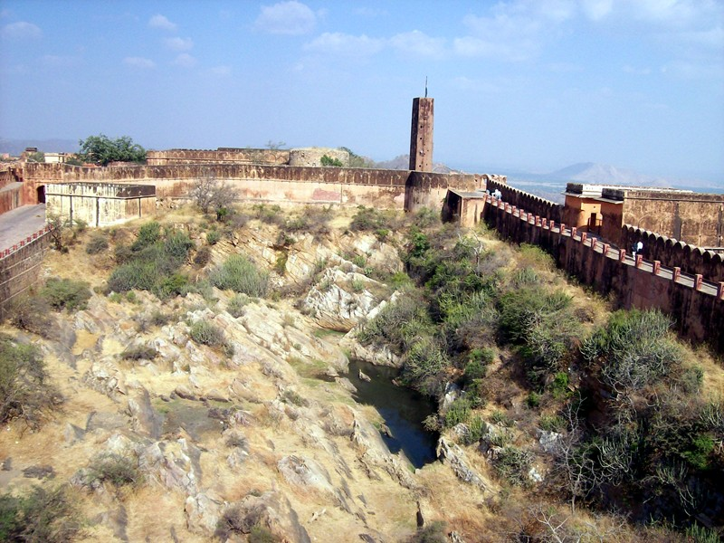
You light the fuse then jump in this water tank to survive the concussion.
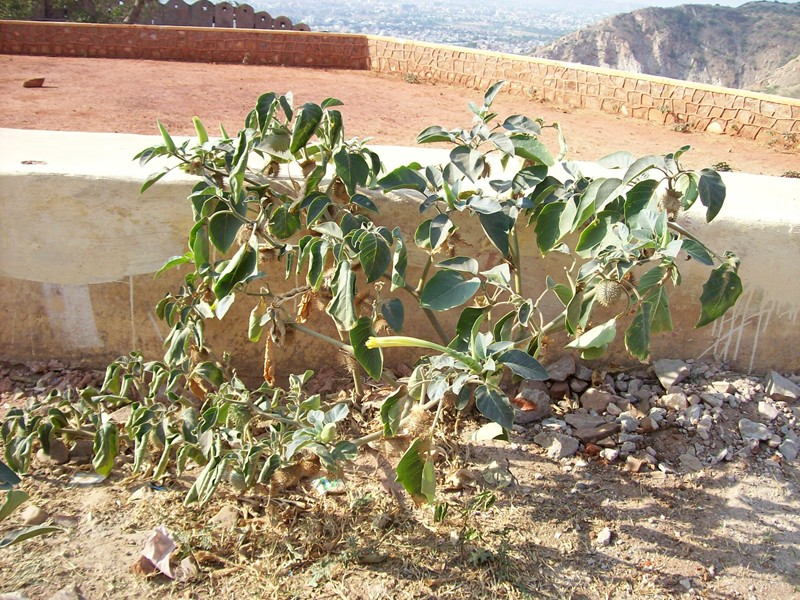
Spotted this spiny-fruited plant on a hot dusty walk to Nahargarh Fort. Wondered if the fruit were edible, and asked Ram what it was. "We call it datura", Ram said. Fortunately, the Indian name also the botanical name. Oops. "Yes," said Ram, "People who want out of this world drink tea brewed with two leaves." He was amazed to hear that in South America curanderos used as a trance drug.
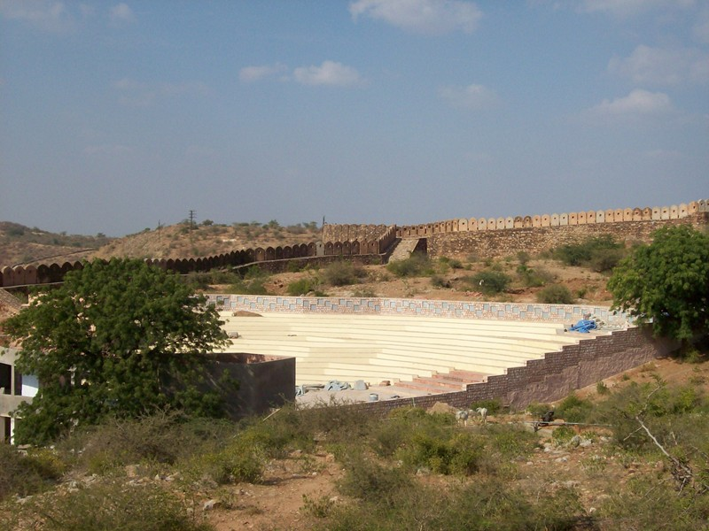
New ampitheater under construction at Nahargarh Fort
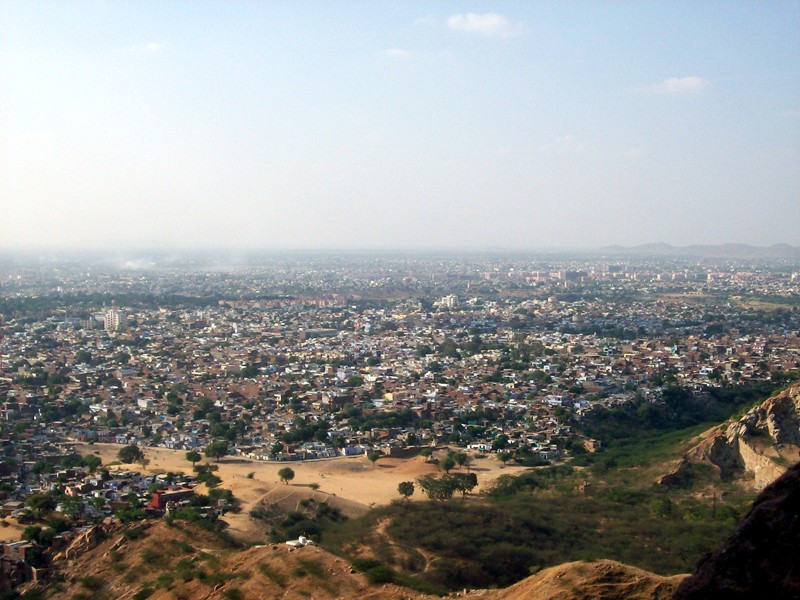
View of Jaipur from Nahargarh